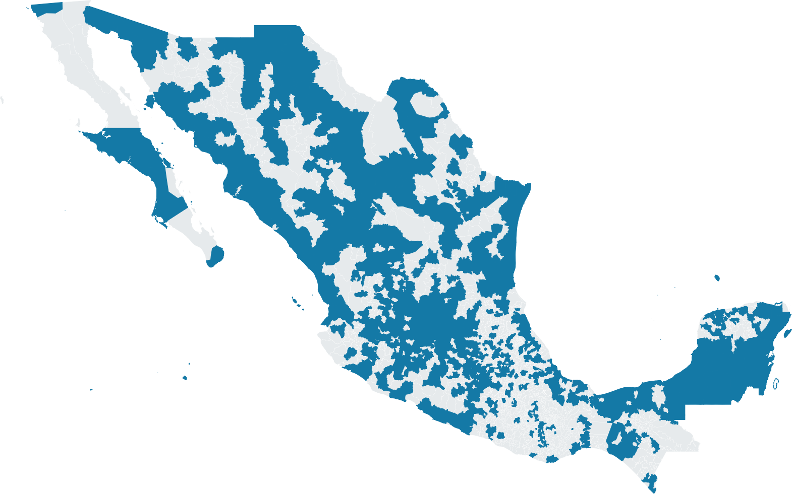
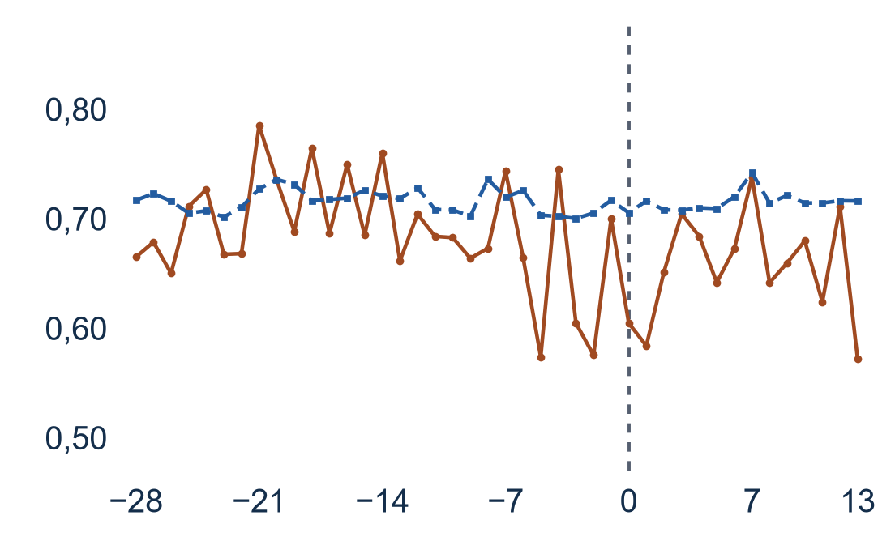
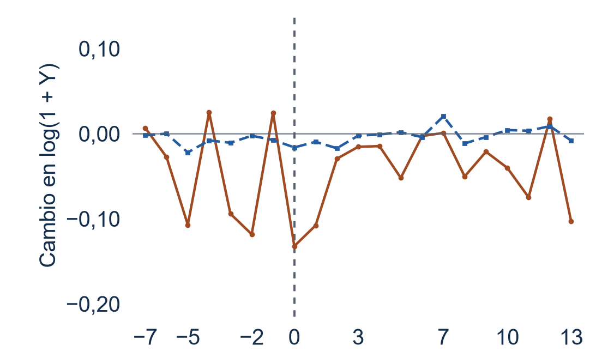
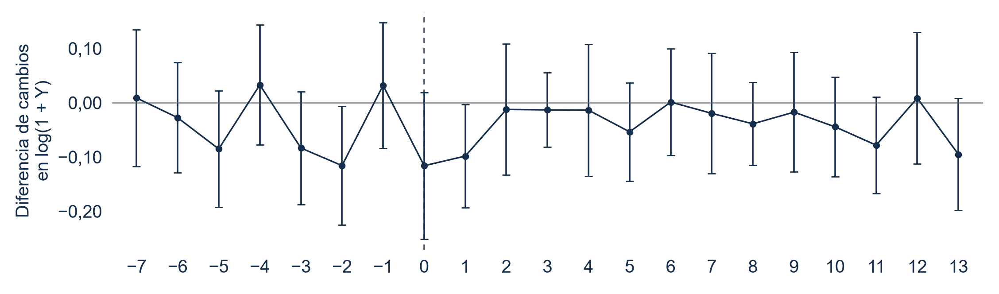
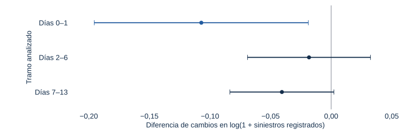

Narcoataques y siniestros viales registrados
Eduardo Garcia Cortez · CU: 207480
Inferencia Causal · ITAM
Contexto
Por qué podrían cambiar los siniestros viales registrados
Mecanismos posibles
Bloqueos o suspensión del transporte
→
Menos circulación
Desvíos
→
Cambios de ruta y de riesgo por vía
Factor humano
→
Cambios al conducir, más atención y cuidado
Interés
Evaluar si los narcoataques tienen un efecto causal sobre los siniestros viales registrados.
Datos
La muestra reúne 77 pares tratados
31 episodios, 32 fechas
Un municipio puede participar en distintas fechas.
Tratamiento
Inicio local de una jornada coordinada de violencia.
Resultado
Accidentes registrados en vías no federales.
54 municipios tratados 765 municipios de control
765 municipios de control
Elaboración propia con datos de: INEGI (ATUS y covariables), Consejo Nacional de Población (CONAPO) y catálogo propio.
Estrategia empírica
Cómo elegimos los controles para comparar cambios
Municipio tratado
En su fecha de inicio
Candidatos elegibles
Estados ajenos al episodio, con cobertura y sin exposición documentada en la ventana previa.
Accidentes previos, población, empleo y autos comparables.
≥10 candidatos · ≥5 estados
1:muchos
Todos los elegibles
El peso se reparte entre ellos.
1:1
El candidato más cercano
Concentra el peso de los controles.
Estrategia empírica
Cada día tiene tres referencias previas
Para el Día 0, se promedian las tres fechas resaltadas del mismo día de la semana.
Semana −4−28−27−26−25−24−23−22
Semana −3−21−20−19−18−17−16−15
Semana −2−14−13−12−11−10−9−8
Referencias del Día 0 Tramos analizadosSemana −1 · diagnóstico previo
Estrategia empírica
Estimación por mínimos cuadrados ponderados
mide la diferencia entre cambios.
Estimamos ATT en escala .
Estrategia empírica
Promedios y cambios de tratados y controles
Tratados Controles ponderados
Promedio observado
Cambio medio respecto a la base
Días respecto al inicio local
Elaboración propia con datos de: INEGI (ATUS y covariables), CONAPO y catálogo propio.
Supuestos
Diagnóstico de tendencias paralelas

Días respecto al inicio local · · Intervalos puntuales del 95 %
Tendencias paralelas: cambios comparables en ausencia del ataque.
Prueba previa por semanas: rechaza por estado; es inconclusa por estado y fecha.
Elaboración propia con datos de: INEGI (ATUS y covariables), CONAPO y catálogo propio.
Resultados
Añadir covariables cambia poco la estimación inicial
Días 0–1 · 1:muchos · Cambio en · Efectos fijos de fecha
| Variable / estadístico | | | | |
|---|
| Tratamiento () | −0,107*(0,043) · 0,019 | −0,105*(0,043) · 0,021 | −0,107*(0,043) · 0,020 | −0,108*(0,045) · 0,022 |
|---|
| Logaritmo de población | — | −0,022(0,019) · 0,261 | −0,030(0,029) · 0,303 | −0,029(0,028) · 0,309 |
|---|
| Empleo por mil habitantes | — | — | 0,000184(0,000399) · 0,649 | 0,000214(0,000434) · 0,625 |
|---|
| Autos por mil habitantes | — | — | — | −0,000111(0,000245) · 0,653 |
|---|
| ponderado | 0,162 | 0,164 | 0,165 | 0,166 |
|---|
| tras descontar fechas | 0,022 | 0,025 | 0,026 | 0,027 |
|---|
3 613 pares municipio–fecha · Segunda línea con (error estándar) y valor p bilateral, por estado y fecha.
Elaboración propia con datos de: INEGI (ATUS y covariables), CONAPO y catálogo propio.
Resultados
La caída estimada es mayor en los días 0 y 1

· Intervalos del 95 % por estado y fecha
Los intervalos de los días 2–6 y 7–13 incluyen cero.
Elaboración propia con datos de: INEGI (ATUS y covariables), CONAPO y catálogo propio.
Resultados
Sensibilidad del resultado
Días 0–1 · , 1:muchos, · intervalos por estado y fecha
| Comparación | Pares tratados | Estimación | Intervalo del 95 % |
|---|
| Base principal: tres fechas | 77 | −0,107 | [−0,195; −0,019] |
|---|
| Base: semana anterior | 77 | −0,064 | [−0,167; 0,039] |
|---|
| Sin feriados ni recesos escolares | 25 | −0,123 | [−0,258; 0,011] |
|---|
| Placebo: inicio 28 días antes | 81 | −0,023 | [−0,087; 0,040] |
|---|
Elaboración propia con datos de: INEGI (ATUS y covariables), CONAPO y catálogo propio.
Conclusión
La mayor caída relativa aparece al inicio
La caída destaca en los días 0–1. Después, las estimaciones son menores y la duración sigue abierta.
Limitación
Las diferencias previas entre los grupos limitan la atribución causal.
Respaldos para discusión →
Discusión
Soporte, balance y pesos
Reglas de elegibilidad
Tres meses completos con registros, territorio estable y ventana previa libre de exposición documentada.
Covariables con medición anterior a y razones entre 0,5 y 2.
Cómo se reparte el peso
reúne los controles elegibles del tratado en .
La mayor diferencia estandarizada observada en 1:muchos es 0,082 en valor absoluto.
Elaboración propia con datos de: INEGI (ATUS y covariables), CONAPO y catálogo propio.
← Índice de respaldos
Discusión
La agrupación permite errores dependientes
Intervalos puntuales
Estado: dependencia entre municipios del mismo estado.
Fecha: dependencia entre municipios con el mismo inicio.
Omisión de estados: sensibilidad a la concentración del peso.
Diagnóstico previo por semanas
Compara las semanas −4, −3 y −1 con la −2.
Por estado: .
Por estado y fecha: .
La agrupación cambia la precisión. El diagnóstico examina una fuente de sesgo.
Elaboración propia con datos de: INEGI (ATUS y covariables), CONAPO y catálogo propio.
← Índice de respaldos
Discusión
El signo se mantiene con 1:1 y en niveles
Días 0–1 · 77 pares tratados · intervalos por estado y fecha
| Modelo y escala | Estimación | Intervalo del 95 % |
|---|
| · 1:muchos · | −0,107 | [−0,195; −0,019] |
|---|
| · 1:1 · | −0,102 | [−0,224; 0,019] |
|---|
| · 1:muchos · registros por municipio y día | −0,397 | [−0,865; 0,072] |
|---|
Con 1:1 y en niveles, el intervalo incluye cero.
Elaboración propia con datos de: INEGI (ATUS y covariables), CONAPO y catálogo propio.
← Índice de respaldos